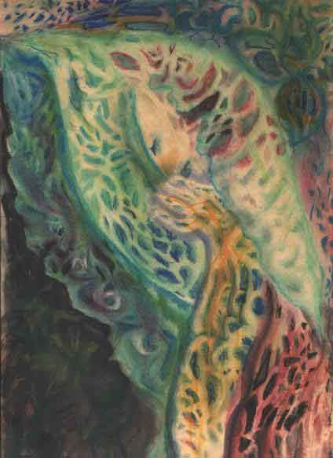
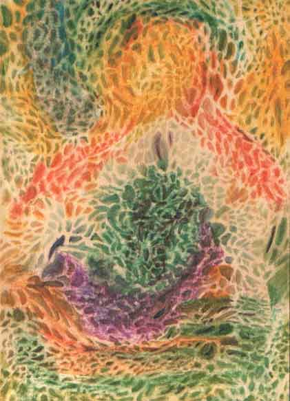

|
Benediction and Holy Encounter
by Leeda
This work is protected by copyright.
It is reproduced here with the author's permission.
| "These pictures were done by Salvia. I was sitting on my bed smoking salvia, when I was suddenly overwhelmed with the “passion” to draw. I found some chalks on the dresser, some paper on the floor, and a bottle of body oil under the bed. With these things and a paint brush, from I don’t know where, these pictures emerged." |
| Benediction |
Holy Encounter |
|  |
 |
|